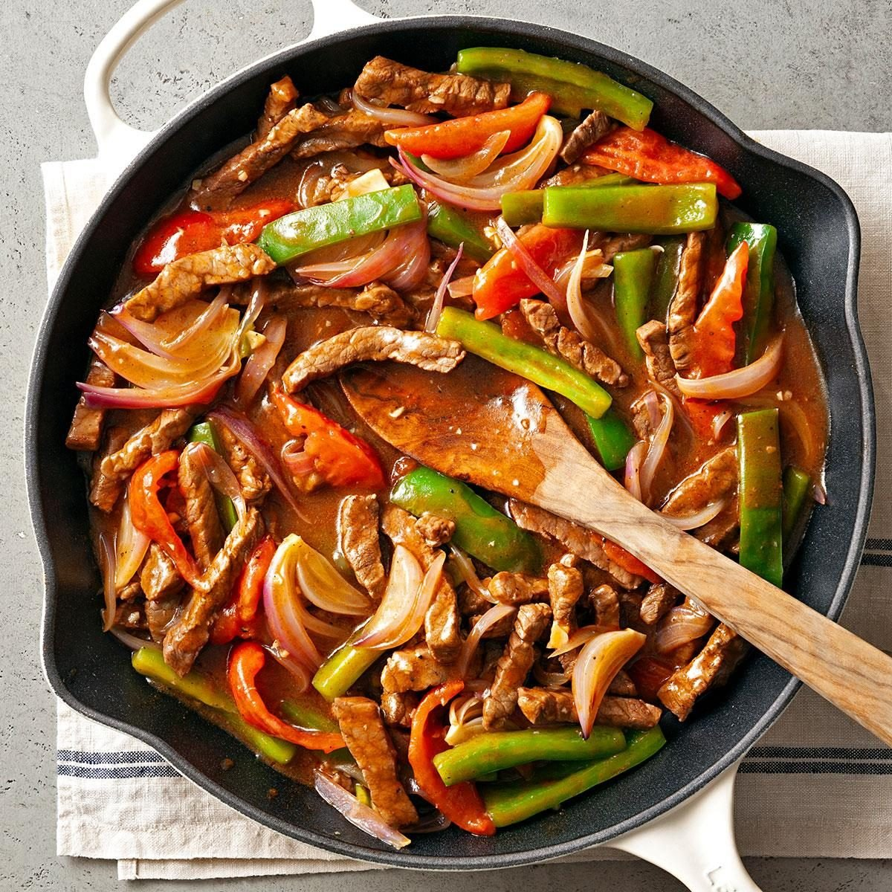

Pepper Steak

Description
Ingredients
- 2 pounds beef sirloin, cut into 2 inch strips
- ¾ teaspoon garlic powder, or to taste
- 3 tablespoons vegetable oil
- 1 cube beef bouillon
- ¼ cup hot water
- 1 tablespoon cornstarch
- ½ cup chopped onion
- 2 large green bell peppers, roughly chopped
- 1 (14.5 ounce) can stewed tomatoes, with liquid
- 3 tablespoons soy sauce
- 1 teaspoon white sugar
- 1 teaspoon salt
Steps
-
Sprinkle beef sirloin strips with garlic powder. Heat vegetable oil
in a large skillet over medium heat and sear beef strips,
about 5 minutes per side. Transfer to a slow cooker.
-
Mix bouillon cube with hot water in a separate container
until dissolved, then mix in cornstarch until dissolved.
-
Pour into the slow cooker with beef strips. Stir in onion, green
peppers, stewed tomatoes, soy sauce, sugar, and salt.
- Cover, and cook on High for 3 to 4 hours, or on Low for 6 to 8 hours.
The actual recipe link can be found
here."
Home